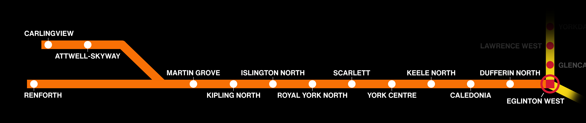

Latest Project: Eglinton West Line: Before the Crosstown
A six-minute long mini-documentary covering the short-lived history of a Toronto Transit Commission subway line that would've traveled across Eglinton Avenue!
Background
This was a video that I created for an assignment as part of the CCT250 course. It is a content creation assignment assigned to us as a way to ensure that we are familiar with using video editing software and other relevant programs to produce a 5+ minute informative video.
As someone with an interest in public transit, as well as knowledge in storyboarding (a requirement presented in the assignment details) and video production, I began drafting the script for this project. The topic chosen was the abandoned Eglinton West Subway Line, which exists today as a TTC light rail line known as Line 5 "Eglinton," which opened in February this year (2026) - a perfect topic that would ensure I would be able to complete this assignment in a rather quick manner.
We were allowed to work in pairs, but I felt confident in completing this alone... and it only took five days to complete, from writing the very first words on the script, to waiting 47 minutes for the 10 gigabyte ZIP file to be submitted to Quercus. The final grade given to this project was 96% (19/20).
This was one of my favorite projects to work on, and I am rather proud of it given the tight turnaround time. If permitted more time, the quality on this video could've been ironed out even more!
Project Details
Date Completed: Nov. 2nd, 2025
Production Time: 5 days
Resolution:
2160p60 (raw), 1080p30 (as rendered)
Equipment Used:
- - iPhone X
- - iPhone 15 Pro
- - Blue Yeti Microphone
Software Used:
- - OBS Studio
- - Paint.NET
- - VEGAS Pro 18.0

Click here to back to the previous page!